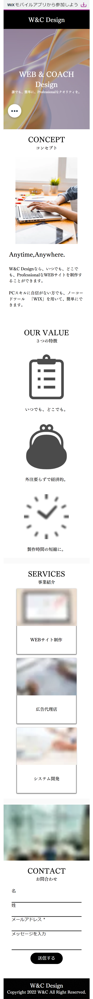
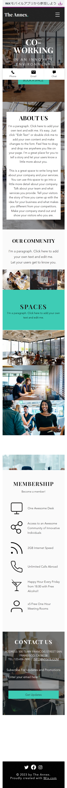
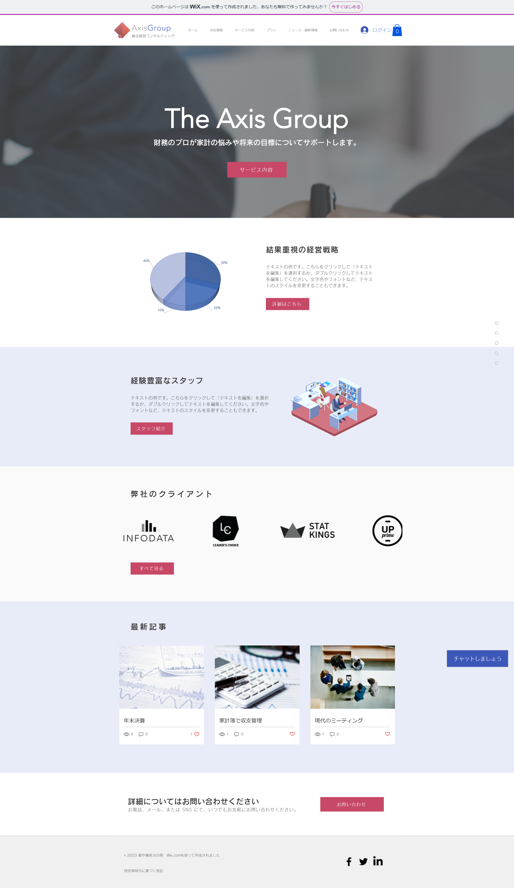
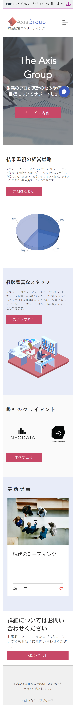

Works
制作物一覧


Webデザイン会社サイト(架空)
担当範囲 : webサイト構築
製作期間 : 4日
使用スキル・ツール : WIX
実装した機能
・チャット機能
制作ポイント
シンプルで見やすく、分かりやすいサイトにすることを心掛けました。


コワーキングスペースの運営会社サイト
(架空)
担当範囲 : webサイト構築
製作期間 : 7日
使用スキル・ツール : WIX
実装した機能
・チャット機能
・予約機能
・会員登録・ログイン
・Google Map設定
制作ポイント
ギャラリーを設け、実際のワークスペースの雰囲気が視覚的に分かりやすいように制作しました。
また、オンライン予約機能は各ページに説明文から予約までの流れがスムーズにいくように
分かりやすい見た目に整えることを意識しました。


コンサルティング会社サイト(架空)
担当範囲 : webサイト構築
製作期間 : 10日
使用スキル・ツール : WIX
実装した機能
・チャット機能
・予約機能
・会員登録・ログイン
・決済機能
・ブログ機能
制作ポイント
コンサルティング会社の雰囲気にあわせた画像やロゴを使用し制作しました。
またサイト内のグラフは自分で作成いたしました。
ユーザーが分かりやすく、かつ細かなアニメーション等の動きもつけることで
見飽きないサイトに仕上げることを意識しました。